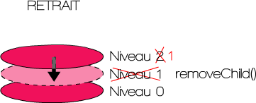

Programmation Orientée Objet
Aymeric LAMBOLEY


Programmation Orientée Objet
Exemples en se basant sur le développement de jeux

JavaScript
Historique
- Créé par Brendan Eich en 1995.
- Petit langage de script, rien à voir avec Java.
- Ajax en 2005.
- Pas de Flash sur iPhone. HTML5 first Draft 2008.
- ECMAScript 5 en 2009.
- Node.js en 2009.
- WebGL sur tous les navigateurs en 2013.
- asm.js en 2013.
- WebAssembly annoncé en 2015.
- ECMAScript 6 Juin 2015.
Problématiques
- Langage interprété
- Pas de typage
- Langage orienté objet à prototype
- Le positionnement des fonctions a un ordre
- this dépend du contexte d'exécution !
- Les navigateurs ne supportent pas tous la dernière version d'ECMAScript
Alternatives
- ES6 avec Babel
- TypeScript
- Dart
- Haxe
State of JS
TypeScript
Historique et but
- Développé par Microsoft en 2012, libre et open source.
- Cocréé par Anders Hejlsberg, principal inventeur de C#.
- Basé sur les standards d'ECMAScript.
- Permet le développement d'applications à grande échelle.
- Langage typé.
- Compilé en JavaScript.
- Tout code JavaScript existant peut-être appelé en TypeScript.
- Tout code TypeScript peut-être utiliser (après compilation) en JavaScript.
- Démarrage avec des fichiers de définitions externes.
- L'éco-système JS migre progressivement vers TS : Angular, Vue, Pixi.js, Babylons.js...
Déclaration de variables
//types primitifs :
let nom:string = "Aymeric";
let isMale:boolean = true;
let i:number = -0.32;
let tab:any[] = [7, "test", nom];
let obj:object = {x:15, y:-3.5};
const PI:number = 3.14;
//output
console.log(nom, isMale);vous avez déjà manipulé des objets...
tout est objet (avec un type)...
La POO
Opposition à la programmation procédurale
Un petit jeu vidéo atteint plusieurs milliers de ligne de code.
Comment séparer les tâches ? Comment s'organiser ?
Comment réutiliser proprement son code ?
Comment travailler à plusieurs ?
Qu'est ce qu'un objet ?
Un ensemble de propriétés et de méthodes
//instanciation
let bird:Bird = new Bird();
//propriétés
bird.color = 0xFF0000;
bird.friction = 0.12;
//méthodes
bird.fly();
bird.launch(12, -5);Mot clef new
À quoi sert un objet ?
Réutiliser son code
let redBird:Bird = new Bird();
redBird.color = 0xFF0000;
let blueBird:Bird = new Bird();
blueBird.color = 0x0000FF;
redBird.friction = 0.12;
blueBird.friction = 0.18;
Réutiliser son code
function onTouch(evt:Event):void
{
blueBird.destroy();
for (let i = 0; i < 3; ++i)
{
let smallBlueBird:Bird = new Bird();
}
}Les fonctions
function somme(a:number, b:number):number
{
return a + b;
}
function positionner(posX:number, posY:number = 0):void
{
monObjet.x = posX;
monObjet.y = posY;
}Appellées aussi méthodes
La récursivité
Problème des Tours d'Hanoï
function factorialCalculation(factorial:number):number
{
if (factorial == 1)
return 1;
else
return factorial * factorialCalculation(factorial - 1);
}
function factorialCalculation2(factorial:number):number
{
let result = 1;
for (let i = 1; i <= factorial; ++i)
result *= i;
return result;
}Un objet est défini par une classe
export class Bird
{
constructor()
{
}
}- nom
- constructeur
- propriétés
- méthodes
Constructeur
Le constructeur est la méthode qui est appelée pour créer l'objet.
export class Bird
{
constructor()
{
}
}Un constructeur ne peut retourner aucun type !
Destructeur
Fonction appelée par le Garbage Collector avant que sa mémoire ne soit rendue.
Cette fonction n'existe pas en TypeScript / JavaScript (on la codera nous-même), mais le garbage collector existe bien !
Il libère la mémoire des objets qui ne sont plus utilisés en passant à intervale indéterminé.
Un objet
export class Bird
{
public life:number = 2;
constructor() {
let velocityX:number = 0;
}
public hurt():void {
--life;
if (life <= -1)
console.log("dead");
}
}L'encapsulation
Limiter l'accès aux données (propriétés et méthodes).
Contrôler quelles propriétés et méthodes peuvent être utilisées à l'extérieur de la classe, dedans et par ses enfants.
Attributs de propriétés et méthodes
- public : accessible partout
- private : accessible uniquement au sein de la classe
- protected : accessible au sein de la classe et des classes qui en héritent (enfants)
Les accesseurs (getters / setters)
Contrôler la lecture / écriture de propriétés.
On peut utiliser get et set pour accèder à des données comme si c'était des propriétés.
export class Bird
{
private _life:number = 2;
get life():number
{
return this._life;
}
set life(value:number)
{
this._life = value;
console.log("life has changed");
}
}var bird:Bird = new Bird();
bird.life = 2;Conventions
//nom de classe commence par une majuscule :
new Bird();
//nom de méthode / propriété public commence par une minuscule :
bird.life = 2;
//nom de méthode / propriété privée commence par un underscore :
_life = 2;- L'encapsulation sert à protéger son code et s'assurer que le fonctionnement interne de l'objet ne sera pas modifié par un tiers.
- L'encapsulation permet de gérer la lecture / écriture des propriétés.
- Il faut toujours déclarer ses propriétés en private (ou protected).
Exemple
export class Vehicle
{
public speed:number = 3;
protected _wheelFriction:number = 0.2;
private var _color:number = 0xFF0000;
constructor(color:number) {
this._color = color;
}
get color():number {
return this._color;
}
}Le mot clef this
Désigne, dans une classe, l'instance courante de la classe elle-même.
export class Vehicle
{
public speed:number = 3;
constructor(speed:number = 4) {
this.speed = speed;
this.y = 12;
console.log(this instanceof Vehicle);
}
}Le mot clef static
Il permet de rendre un membre utilisable dans un contexte de classe et non d'occurence.
Pour utiliser une méthode ou propriété statique, on n'a pas besoin de construire l'objet.
let random:number = Math.random();
public static intersecRec(rec1:Rectangle, rec2:Rectangle):Rectangle {
// calcul de l'intersection de 2 rectangles.
}
public static readonly GAME_VERSION:String = "8.0";L'héritage
Concept clef de la POO
Notion empruntée au monde réel : tout élément hérite d'un autre en le spécialisant.
La voiture hérite du véhicule. La moto hérite du véhicule.
Une voiture n'est pas une moto et inversement. Par contre elle est un véhicule tout comme la moto.
Vehicle est la classe mère.
Car et Bike sont des classes dérivées, filles.
L'héritage permet de réutiliser le code d'une classe de base.
Il rajoute des fonctionnalités à une classe parent sans la modifier.
export class Vehicle
{
public speed:number = 3;
protected _wheelFriction:number = 0.2;
private _color:number = 0xFF0000;
constructor() {
}
get color():number {
return this._color;
}
}export class Car extends Vehicle
{
constructor() {
super();
this.speed = 5;
}
public freinAMain():void {
}
}export class Bike extends Vehicle
{
public function Vehicle() {
this._wheelFriction = 0.5;
}
public function wheeling():void {
}
}let bike:Bike = new Bike();
bike.wheeling();
console.log(bike.color);
console.log(bike instanceof Vehicle, bike instanceof Car);L'héritage permet de spécialiser un enfant.
On ne peut hériter que d'un seul parent à la fois (qui lui même hérite d'un parent...).
Une classe enfant a accès aux propriétés et métodes public et protected.
Les classes filles héritent automatiquement des fonctionnalités des classes mères.
Utilisation du mot clef extends.
Le polymorphisme
(du grec « poly » plusieurs et « morphê » forme)
Dans un arbre d’héritage, une méthode polymorphe est une méthode qui a plusieurs formes en fonction de la classe dans laquelle elle se situe.
Nous allons surcharger des méthodes pour redéfinir des comportements de la classe qu'on hérite au sein de notre objet.
On ne peut surcharger que les méthodes public et protected.
Le mot clef override
export class Vehicle
{
public move():void {
this.x += 3;
}
}
export class Plane extends Vehicle
{
override public move():void {
this.y += 1;
}
}Le mot clef super
export class Vehicle
{
public move():void {
this.x += 3;
}
}
export class Plane extends Vehicle
{
override public move():void {
super.move();
this.y += 1;
}
}Le mot clef super permet également de spécifier l'ordre.
La Display List
Créée par Flash, reprise par de nombreux frameworks : Pixi.js, Cocos2D-x, CreateJS...
Hiérarchie, basée sur une relation conteneur-contenu. L'objet Stage est la racine.
Ajout d'un objet graphique à la liste d'affichage
let sp:Sprite = new Sprite();
this.addChild(sp);Enlever un objet graphique de la liste d'affichage
this.removeChild(sp);Pile d'affichage
Opérations
Quelques propriétés et méthodes
this.addChildAt(child:DisplayObject, index:number):DisplayObject
this.removeChildAt(child:DisplayObject, index:number):DisplayObject
this.getChildAt(index:number):DisplayObject
this.getChildByName(name:string):DisplayObject
this.numChildren // retourne le nombre de fils
this.swapChildren(child1:DisplayObject, child2:DisplayObject):Container
this.setChildIndex(child:DisplayObject, index:number):voidL'évènementiel
Un programme doit réagir en fonction des actions de l'utilisateur.
- souris
- clavier
- microphone
- webcam
- kinect
- leap motion
- occulus rift
- accéléromètre
- gyroscope
- multi-touch
- ...
Le JavaScript est basé sur le modèle évènementiel (design pattern Observer).
Il est composé de 3 éléments :
- sujet
- évènements
- écouteurs
sujet : oiseau bleu
évènement : touch
écouteur : créer 3 petits oiseaux
let bird:BlueBird = new BlueBird();
blueBird.once("pointerdown", this.onTouch.bind(this));
public onTouch():void {
blueBird.destroy();
for (var i:uint = 0; i < 3; ++i)
let smallBlueBird:BlueBird = new BlueBird();
}On s'abonne à un sujet en spécifiant un évènement addEventListener.
Le sujet produit un évènement new Event.
Le sujet distribue cet évènement dispatchEvent.
L'écouteur fait une action.
On se désabonne de cet évènement removeEventListener.
Grâce au modèle évènementiel :
- chaque objet et indépendant et autonome. Il dispatche des évènements lorsqu'il y a un changement d'état.
- l'objet n'est donc plus lié à un mais plusieurs contextes d'utilisation.
- débugger est très facile.
Les classes abstraites
Une classe abstraite est une classe dont l'implémentation n'est pas complète et qui n'est pas instanciable.
Elle sert de base à d'autres classes dérivées.
export abstract class ABird
{
protected _friction:number;
constructor() {
this._friction = 12;
}
}Par convention, son nom commence avec un A majuscule.
Les Interfaces
Les interfaces permettent de définir des méthodes public à implémenter obligatoirement par une classe.
Une classe implémentant une interface doit définir les fonctions de même signature.
interface IBird
{
throw(speedX:number, speedY:number):void;
}export class ABird implements IBird
{
public throw(speedX:number, speedY:number):void {
}
}On redéfinira la fonction throw en la surchargeant dans une classe enfant.
À l'inverse de l'héritage, il est possible d'implémenter plusieurs interfaces.
Une interface peut-être utilisée comme annotation de type, tout comme une classe.
Le modèle Entité / Composant
- Utilisé par de nombreux moteurs de jeu (Unity, Unreal Engine, Flambe...).
- Chaque moteur a eu sa façon d'implémenter le modèle entité / composant.
- Une entité est une classe de base à laquelle on ne peut qu'ajouter et supprimer des composants.
- Les composants ajoutent des fonctionnalités à l'entité (graphique, physique, input, script).
- Un composant doit pouvoir être réutilisé sur plusieurs entités.
- On peut utiliser l'héritage pour spécifier des composants.
Design Pattern
Au nombre de 23, ils permettent de résoudre des problèmes de conception fréquemement rencontrés par les développeurs.
Le JavaScript a été conçu sur le design pattern observer.
Singleton : restreindre l'instanciation d'une classe à un seul objet.
export class SoundManager
{
static private _instance:SoundManager;
static public getInstance():SoundManager {
if (!this._instance)
this._instance = new SoundManager();
return this._instance;
}
constructor() {
}
}Le modèle MVC
Modèle très courant destiné à répondre aux besoins des applications interactives en séparant en 3 les tâches :
- Modèle (de données), ex : logique, physique, base de données...
- Vue, ex: graphisme, interface utilisateur...
- Contrôleur, synchronise M et V, logique, évènements...
L'UML
Unified Modeling Language, langage de modélisation graphique à base de pictogramme pour spécifier, visualiser, modifier et construire les documents nécessaires au bon développement d'un logiciel orienté objet.
14 types de diagrammes :
- Diagramme de classe.
- Diagramme d'objets.
- Diagramme des packages.
- Diagramme d'activité.
- Diagramme de séquence.